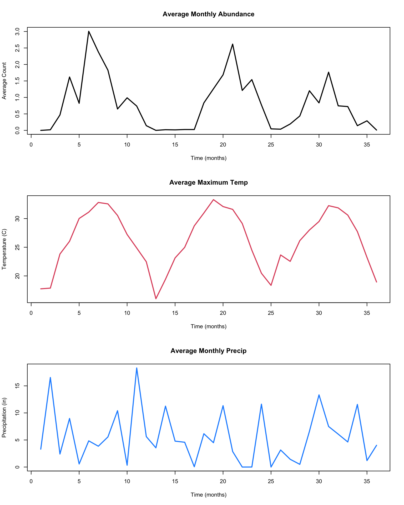
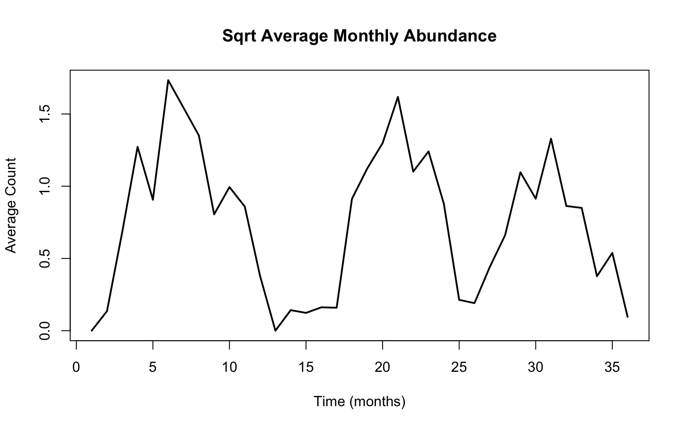
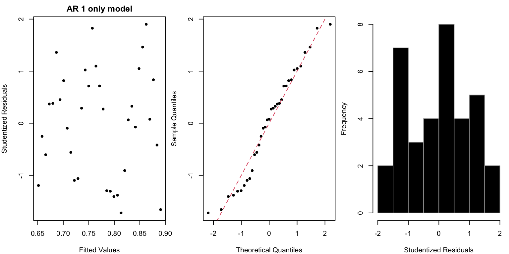
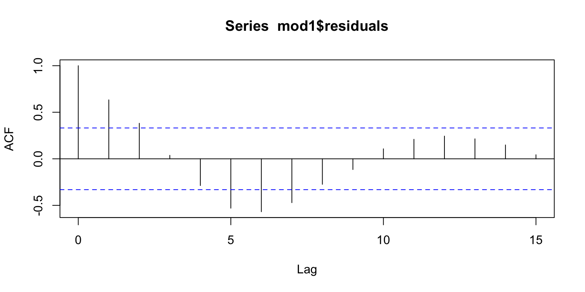

The VectorByte Team (Leah R. Johnson, Virginia Tech)
Overview and Instructions
The goal of this practical is to practice building models for time-dependent data using simple regression based techniques. This includes incorporated possible transformations, trying out different time dependent predictors (including lagged variables) and assessing model fit using diagnostic plots.
Guided example: Monthly average mosquito counts in Walton County, FL
The file Culex_erraticus_walton_covariates_aggregated.csv on the course website contains data on average monthly counts of mosquitos (sample_value) in Walton, FL, together with monthly average maximum temperature (MaxTemp in C) and precipitation (Precip in inches) for each month from January 2015 through December 2017 (Month_Yr).
Exploring the Data
As always, we first want to take a look at the data, to make sure we understand it, and that we don’t have missing or weird values.
Month_Yr sample_value MaxTemp Precip
Length:36 Min. :0.00000 Min. :16.02 Min. : 0.000
Class :character 1st Qu.:0.04318 1st Qu.:22.99 1st Qu.: 2.162
Mode :character Median :0.73001 Median :26.69 Median : 4.606
Mean :0.80798 Mean :26.23 Mean : 5.595
3rd Qu.:1.22443 3rd Qu.:30.70 3rd Qu.: 7.864
Max. :3.00595 Max. :33.31 Max. :18.307
We can see that the minimum observed average number of mosquitoes it zero, and max is only 3 (there are likely many zeros averaged over many days in the month). There don’t appear to be any NAs in the data. In this case the dataset itself is small enough that we can print the whole thing to ensure it’s complete:
First we’ll examine the data itself, including the predictors:
months<-dim(mozData)[1]t<-1:months ## counter for months in the data setpar(mfrow=c(3,1))plot(t, mozData$sample_value, type="l", lwd=2, main="Average Monthly Abundance", xlab ="Time (months)", ylab ="Average Count")plot(t, mozData$MaxTemp, type="l",col =2, lwd=2, main="Average Maximum Temp", xlab ="Time (months)", ylab ="Temperature (C)")plot(t, mozData$Precip, type="l",col="dodgerblue", lwd=2,main="Average Monthly Precip", xlab ="Time (months)", ylab ="Precipitation (in)")

Visually we noticed that there may be a bit of clumping in the values for abundance (this is subtle) – in particular, since we have a lot of very small/nearly zero counts, a transform, such as a square root, may spread things out for the abundances. It also looks like both the abundance and temperature data are more cyclical than the precipitation, and thus more likely to be related to each other. There’s also not visually a lot of indication of a trend, but it’s usually worthwhile to consider it anyway. Replotting the abundance data with a transformation:
months<-dim(mozData)[1]t<-1:months ## counter for months in the data setplot(t, sqrt(mozData$sample_value), type="l", lwd=2, main="Sqrt Average Monthly Abundance", xlab ="Time (months)", ylab ="Average Count")

That looks a little bit better. I suggest we go with this for our response.
Building a data frame
Before we get into model building, we always want to build a data frame to contain all of the predictors that we want to consider, at the potential lags that we’re interested in. In the lecture we saw building the AR, sine/cosine, and trend predictors:
t <-2:months ## to make building the AR1 predictors easiermozTS <-data.frame(Y=sqrt(mozData$sample_value[t]), # transformed responseYl1=sqrt(mozData$sample_value[t-1]), # AR1 predictort=t, # trend predictorsin12=sin(2*pi*t/12), cos12=cos(2*pi*t/12) # periodic predictors )
We will also put in the temperature and precipitation predictors. But we need to think about what might be an appropriate lag. If this were daily or weekly data, we’d probably want to have a fairly sizable lag – mosquitoes take a while to develop, so the number we see today is not likely related to the temperature today. However, since these data are agregated across a whole month, as is the temperature/precipitaion, the current month values are likely to be useful. However, it’s even possible that last month’s values may be so we’ll add those in as well:
mozTS$MaxTemp<-mozData$MaxTemp[t] ## current tempsmozTS$MaxTempl1<-mozData$MaxTemp[t-1] ## previous tempsmozTS$Precip<-mozData$Precip[t] ## current precipmozTS$Precipl1<-mozData$Precip[t-1] ## previous precip
Thus our full dataframe:
summary(mozTS)
Y Yl1 t sin12
Min. :0.0000 Min. :0.0000 Min. : 2.0 Min. :-1.00000
1st Qu.:0.2951 1st Qu.:0.2951 1st Qu.:10.5 1st Qu.:-0.68301
Median :0.8590 Median :0.8590 Median :19.0 Median : 0.00000
Mean :0.7711 Mean :0.7684 Mean :19.0 Mean :-0.01429
3rd Qu.:1.1120 3rd Qu.:1.1120 3rd Qu.:27.5 3rd Qu.: 0.68301
Max. :1.7338 Max. :1.7338 Max. :36.0 Max. : 1.00000
cos12 MaxTemp MaxTempl1 Precip
Min. :-1.00000 Min. :16.02 Min. :16.02 Min. : 0.000
1st Qu.:-0.68301 1st Qu.:23.18 1st Qu.:23.18 1st Qu.: 1.918
Median : 0.00000 Median :27.23 Median :27.23 Median : 4.631
Mean :-0.02474 Mean :26.47 Mean :26.44 Mean : 5.660
3rd Qu.: 0.50000 3rd Qu.:30.79 3rd Qu.:30.79 3rd Qu.: 8.234
Max. : 1.00000 Max. :33.31 Max. :33.31 Max. :18.307
Precipl1
Min. : 0.000
1st Qu.: 1.918
Median : 4.631
Mean : 5.640
3rd Qu.: 8.234
Max. :18.307
We will first build a very simple model – just a trend – to practice building the model, checking diagnostics, and plotting predictions.
mod1<-lm(Y ~ t, data=mozTS)summary(mod1)
Call:
lm(formula = Y ~ t, data = mozTS)
Residuals:
Min 1Q Median 3Q Max
-0.81332 -0.47902 0.03671 0.37384 0.87119
Coefficients:
Estimate Std. Error t value Pr(>|t|)
(Intercept) 0.904809 0.178421 5.071 1.5e-05 ***
t -0.007038 0.008292 -0.849 0.402
---
Signif. codes: 0 '***' 0.001 '**' 0.01 '*' 0.05 '.' 0.1 ' ' 1
Residual standard error: 0.4954 on 33 degrees of freedom
Multiple R-squared: 0.02136, Adjusted R-squared: -0.008291
F-statistic: 0.7204 on 1 and 33 DF, p-value: 0.4021
The model output indicates that this model is not useful – the trend is not significant and it only explains about 2% of the variability. Let’s plot the predictions:
Not good – we’ll definitely need to try something else! Remember that since we’re using a linear model for this, that we should check our residual plots as usual, and then also plot the acf of the residuals:
par(mfrow=c(1,3), mar=c(4,4,2,0.5)) ## studentized residuals vs fittedplot(mod1$fitted, rstudent(mod1), col=1,xlab="Fitted Values", ylab="Studentized Residuals", pch=20, main="AR 1 only model")## qq plot of studentized residualsqqnorm(rstudent(mod1), pch=20, col=1, main="" )abline(a=0,b=1,lty=2, col=2)## histogram of studentized residualshist(rstudent(mod1), col=1, xlab="Studentized Residuals", main="", border=8)

This doesn’t look really bad, although the histogram might be a bit weird. Finally the acf
acf(mod1$residuals)

This is where we can see that we definitely aren’t able to capture the pattern. There’s substantial autocorrelation left at a 1 month lag, and around 6 months.
Finally, for moving forward, we can extract the BIC for this model so that we can compare with other models that you’ll build next.
n<-length(t)extractAIC(mod1, k=log(n))[2]
[1] -44.11057
Build and compare your own models
Follow the procedure I showed for the model with a simple trend, and build at least 4 more models:
one that contains an AR term
one with the sine/cosine terms
one with the environmental predictors
one with a combination
Check diagnostics/model assumptions as you go. Then at the end compare all of your models via BIC. What is your best model by that metric? We’ll share among the group what folks found to be good models.
Extra Practice
Imagine that you are missing a few months at random – how would you need to modify the analysis. Try it out by removing about 5 months not at the beginning or end of the time series.